L’école nationale supérieure d’informatique
Décembre 2016
Apprentissage
par renforcement
Séminaire doctoral d’apprentissage machine
Réalisé par :
Nawfel BENGHERBIA
1ère année doctorat au CERIST
Pour :
Mme Leila HAMDAD
Table des matières
2.Modélisation de l’environnement 4
3.Politique et valeur d’une politique 5
3.1.Valeur d'un couple état-action pour une politique donnée 5
Algorithme d’estimation de la fonction qπ 7
Algorithme d’itération de politiques (estimation de q*) 8
Itération de politiques généralisée 8
5.Apprentissage par renforcement 10
6.Apprentissage par renforcement et approximation de fonctions 12
L’algorithme SARSA avec fonction d’approximation dérivable 13
7.SATSA(λ) avec traces d’éligibilité 15
L’apprentissage par renforcement est un sous domaine de l’apprentissage machine où un agent interagit avec son environnement et apprend à choisir les actions qui maximisent ses gains.
L’apprentissage par renforcement est différent de l’apprentissage supervisé du fait que l’agent n’obtient pas, en interagissant avec l’environnement, des exemples (état, action à suivre). Il obtient plutôt, suite au choix d’une action, un gain sans savoir si le gain aurait pu être meilleur ou pire avait-il choisi une autre action.
Robots qui apprennent tous seuls à se mobiliser pour atteindre un but : https://youtu.be/ggqnxyjaKe4?t=292
Programmes qui jouent au jeux Atari avec une performance compétitive aux êtres humains : https://youtu.be/ggqnxyjaKe4?t=784
AlphaGo: un programme qui joue au jeu de go, et qui a battu le champion du monde https://research.googleblog.com/2016/01/alphago-mastering-ancient-game-of-go.html
Parmi les chalenges d’apprentissage par renforcement, on cite :
Chercher une balance entre l’exploitation et l’exploration : Le besoin de choisir des actions avec de bonnes récompenses et le besoin d’exploration pour découvrir s’il y a d’autres actions de meilleures récompenses.
Le fait que les actions peuvent avoir des conséquences non immédiates (par exemple : une très grande récompense suite à une chaine d’actions avec récompenses petites relativement à leurs alternatifs).
Dans les problèmes du monde réel, le nombre des états possibles de l’environnement peut être prohibitivement grand pour être encodés sur ordinateur. Ceci impose l’utilisation des fonctions d’approximation comme les réseaux de neurones artificiels et les arbres de décisions.
On s’intéresse à un agent qui interagit avec son environnement. L’agent observe l’état de l’environnement et choisi l’action à faire. L’environnement récompense l’agent ou le punit avec un signal (gain). L’agent choisi ses actions de façon à maximiser ses gains à long terme.
On suppose que l’interaction entre l’agent et l’environnement peut être décrite par un processus de décision Markovien (MDP : Markov Decision Process). Un tel processus est décrit par :
Un ensemble fini d’états s ∈ S ;
Un ensemble fini d’actions a ∈ A ;
Un ensemble fini de valeurs de gain r ∈ R ;
La dynamique du système est Markovienne: La probabilité d’obtenir un gain r et arriver à l’état s’ au moment t+1 dépend seulement de l’état et l’action entreprise au moment t :
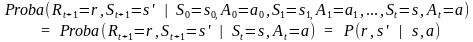
Si les probabilités sont
connues, on les stocke dans un tableau P.
sont
connues, on les stocke dans un tableau P.

Une politique π défini le comportement de
l’agent. On définie la fonction
 comme
étant la probabilité que l’agent choisit l’action a lorsqu’il
est dans l’état s, sous la politique π :
comme
étant la probabilité que l’agent choisit l’action a lorsqu’il
est dans l’état s, sous la politique π :
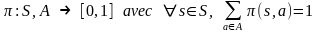
Si la politique associe à l’état s l’action a avec probabilité 1, on se permet d’écrire :

Si à tout état la politique associe une seule action, on dit qu’elle est déterministe.
On défini la fonction valeur d’état-action: ,
comme étant le gain à long terme que l’agent espère recevoir en
étant à l’état s, en faisant l’action a et en suivant par la
suite la politique π.
,
comme étant le gain à long terme que l’agent espère recevoir en
étant à l’état s, en faisant l’action a et en suivant par la
suite la politique π.
Si on est à l’instant t, on défini le gain à long terme par la somme :
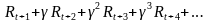
où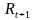
est
le gain que l’agent obtiendra en faisant l’action et
γ (0 ≤ γ < 1) s’appelle le facteur de décompte. Plus ceci
est proche de 0, plus on valorise les gains immédiats par rapport
aux gains futurs.
et
γ (0 ≤ γ < 1) s’appelle le facteur de décompte. Plus ceci
est proche de 0, plus on valorise les gains immédiats par rapport
aux gains futurs.
la fonction valeur d’état-action est
définie par :
est
définie par :

On dit que la politique π’ et meilleure que la politique π ssi :

Pour tout MDP, il existe au moins une politique optimale déterministe.
Une politique π* est optimale si elle maximise la fonction valeur d’état-action. c’est-à-dire :
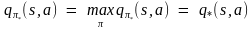
Étant donné que le nombre de politiques est exponentiel en nombre d’états, il peut semblé inenvisageable de trouver cette q* . Heureusement pour nous, le théorème d’amélioration de politiques, qu’on verra plus tard, nous donne exactement ça.
Étant donné q*, il est facile de se comporter de façon optimale. Il suffit de choisir à tout moment l’action du gain maximal on choisissant à chaque état l’action de valeur maximale :

Il existe donc toujours au moins une politique optimale déterministe.
D’après l’équation d’expectation de
Bellman, la fonction valeur d’état-action d’une
politique π peut s’écrire comme :
d’une
politique π peut s’écrire comme :
Quant à la fonction valeur optimale q*, l’équation d’optimalité de Bellman nous donne :

Le problème de planification est un cas particulier de l’apprentissage par renforcement où on connaît le modèle de l’environnement, c’est-à-dire : la probabilité d’arriver à un état s’ et recevoir un gain r de n’importe quel couple état-action (s, a) :
On étudie deux problèmes :
Prédiction : Déterminer la fonction valeur d’état-action pour une politique donné ;
Contrôle : Rechercher la politique optimale d’un MDP.
Une façon de calculer (ou estimer) la fonction qπ est de l’écrire en fonction de lui même et puis utiliser la programmation dynamique. On prend l’équation d’expectation de Bellman, et on évalue l’espérance mathématique en utilisant le modèle de l’environnement :

On crée un tableau qui
va représenter la fonction
qui
va représenter la fonction ,
et on l’initialise aléatoirement. Ensuite on met à jour les
entrées du tableau en utilisant la relation récursive. On répète
ce processus itérativement. À la limite, un théorème nous dit
que
,
et on l’initialise aléatoirement. Ensuite on met à jour les
entrées du tableau en utilisant la relation récursive. On répète
ce processus itérativement. À la limite, un théorème nous dit
que convergera
vers
convergera
vers .
.
Entrées : (S, A, P, π)
Sortie :Un tableau Q(s, a)
Initialiser le tableau : Q(s, a) ← 0 pour tout s, a ;
Répéter :
Δ ←0
Pour chaque couple état-action (s, a), fait :
q ← Q(s, a) ;
Mise à jour :

Δ ← max( Δ, |q – Q(s, a)| ) ;
Fin pour.
Jusqu’à (Δ < un seuil).
Retourner le tableau .
Le théorème d’amélioration de politiques nous
dit qu’étant donné une politique π avec fonction valeur
d’état-action ,
on peut créer une meilleure politique π’ (
,
on peut créer une meilleure politique π’ ( )
en choisissant dans la nouvelle politique π’ pour un état s
l’action maximisant
)
en choisissant dans la nouvelle politique π’ pour un état s
l’action maximisant :
:
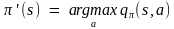
Ce résultat nous donne un algorithme pour trouver
la politique optimale, il suffit de commencer par une politique
quelconque π0, estimer comme
décrit dans la section précédente, créer une politique améliorée
π1, estimer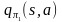
,
améliorer π1 et ainsi de suite. À la limite, on
convergera vers la politique optimale π*.
comme
décrit dans la section précédente, créer une politique améliorée
π1, estimer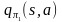
,
améliorer π1 et ainsi de suite. À la limite, on
convergera vers la politique optimale π*.
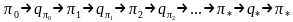
Entrées : (S, A, P)
Sortie : Un tableau Q(s, a)
Créer aléatoirement une politique π déterministe ;
Répéter :
stable ← Vrai ;
Q(s, a) ← Algorithme d’estimation de la fonction qπ(S, A, P(s’,r | s, a), π)
Pour chaque , faire :
b ← π(s) ;
Amélioration de la politique :

en cas d'égalité (deux ou plusieurs actions de valeur maximale), on choisit une des actions toujours de la même façon)
Si b ≠ π(s) Alors stable ← Faux ; Fin Si ;
Fin Pour.
Jusqu’à (stable = Vrai).
Retourner le tableau .
.
L’algorithme présenté ci-dessus est inefficace. Il répète les deux phases (estimation et amélioration) jusqu’à la convergence, alors que l’estimation en elle-même ne converge qu’à l’infini. Dans la pratique, on remarque qu’il suffit de faire quelques itérations d’estimation seulement pour que notre Q(s, a) estimé aie suffisamment d’informations pour améliorer la politique en cours.
L’idée de l’algorithme d’itération de
politiques généralisée (GPI) est d’entrelacer les
processus d’estimation et d’amélioration de façon quelconque.
Un théorème nous dit que ce nouvel algorithme converge lui aussi
vers la fonction valeur d’état-action optimale .
Les algorithmes qu’on verra dans les sections suivantes sont des
variations de l’itération de politiques généralisée.
.
Les algorithmes qu’on verra dans les sections suivantes sont des
variations de l’itération de politiques généralisée.
On passe maintenant à un cas plus général de
l’apprentissage par renforcement. Dans cette partie, on suppose que
le modèle du MDP n’est pas connu : On ne connaît pas les
probabilités .
Le but est que l’agent apprenne le comportement optimal tout en
interagissant avec son environnement. On veut que la performance de
l’agent s’améliore au fil du temps.
.
Le but est que l’agent apprenne le comportement optimal tout en
interagissant avec son environnement. On veut que la performance de
l’agent s’améliore au fil du temps.
On décrit ici l’algorithme SARSA qui fait partie des méthodes d’itération de politiques généralisée (GPI) qui entrelacent deux processus : un processus d’évaluation et un processus d’amélioration de la politique en cours.
Dans l’algorithme SARSA, l’agent apprend à
faire les bonnes actions tout en interagissant avec son
environnement. Il maintient un tableau Q(s, a) : une estimation
de la fonction ,
et il suit une politique gloutonne (ε-greedy) qui choisi la
meilleur action selon Q(s, a) avec probabilité (1 – ε) (en vue de
maximiser les gains : Exploiter la politique apprise), ou
bien une autre action aléatoire avec probabilité ε (pour explorer
les autres actions).
,
et il suit une politique gloutonne (ε-greedy) qui choisi la
meilleur action selon Q(s, a) avec probabilité (1 – ε) (en vue de
maximiser les gains : Exploiter la politique apprise), ou
bien une autre action aléatoire avec probabilité ε (pour explorer
les autres actions).
L’algorithme SARSA se base sur le principe de Bootstrapping : Mettre à jour un estimateur à partir d’un autre estimateur. À chaque interaction avec l’environnement, l’agent améliore son estimation de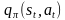 en utilisant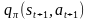 et le gain observé , grâce à l’équation d’expectation de Bellman :
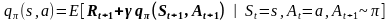
Le nouvel estimateur de est donné par :

Entrées : (S, A)
But : Trouver une politique quasi-optimale .
.
Initialiser un tableau Q(s, a) aléatoirement ;
π ← Une politique qui Choisit pour chaque état s,
l’action avec
probabilité
ou bien une action aléatoire avec probabilité ε.
avec
probabilité
ou bien une action aléatoire avec probabilité ε.
s ← l’état initial ;
a ← une action choisie de s par la politique π ;
Répéter :
Effectuer l’action a et observer le gain r et l’état s’ ;
a’ ← une action choisie de s’ par la politique π ;
Calculer l’erreur entre la valeur prévue et le nouvel estimateur :
Mettre à jour l’estimation de sorte à réduire l’erreur :
Faire décroitre la valeur de α ;
s ← s’ ; a ← a’ ;
Quand on met à jour une case du tableau Q(s, a), on ne remplace pas l’ancienne estimation par la nouvelle. Mais on la reproche de la nouvelle estimation avec un pas α ∈ [0, 1].
Si
 ,
l’algorithme SARSA est garanti de ne pas diverger de la politique
optimale (C’est-à-dire que l’erreur entre la fonction Q(s, a)
estimée et q*(s, a) est bornée).
,
l’algorithme SARSA est garanti de ne pas diverger de la politique
optimale (C’est-à-dire que l’erreur entre la fonction Q(s, a)
estimée et q*(s, a) est bornée).
Dans les problèmes pratiques, on se trouve souvent avec un nombre gigantesque d’états ce qui rend impossible d’utiliser les méthodes tabulaires (manipulant le tableau Q(s, a)) par manque d’espace de stockage ou à cause de la lenteur d’accès aux données. Heureusement, l’apprentissage par renforcement peut être généralisé par le biais des fonctions d’approximation comme les réseaux de neurones et les arbres de décisions. En s’intéresse ici à l’approximation par les fonctions dérivables.
On utilise au lieu de la fonction de valeur d’état-action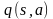 , sa fonction approximée 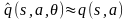 où θ est le vecteur des paramètres de la fonction d’approximation (Les paramètres d’un réseau de neurones par exemple). Donc, au lieu de stocker le tableau Q(s, a), on stocke uniquement le vecteur θ.
A tout état s, on capture quelques propriétés
de l’environnement pour créer un feature vector X(s). La
fonction
 utilise
ce vecteur pour calculer la valeur du couple état-action :
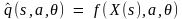
.
utilise
ce vecteur pour calculer la valeur du couple état-action :
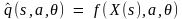
.
Le but de l’apprentissage devient de trouver le vecteur de paramètres θ qui minimise l’erreur :

Comme θ est de
taille très petite par rapport à Q(s, a), il est généralement
impossible de trouver un θ tel
que l(θ) = 0. De plus, si la
fonction n’est
pas linéaire, il devient difficile de trouver θ* :
l’optimum global de la fonction l(θ).
n’est
pas linéaire, il devient difficile de trouver θ* :
l’optimum global de la fonction l(θ).
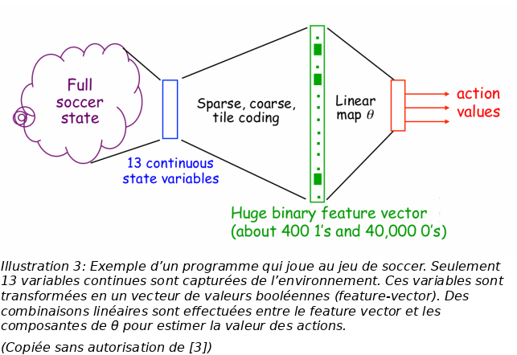
Le principe de l’algorithme reste le même sauf pour le tableau Q(s, a) qui n’existe plus. Au lieu de lire la valeur d’une case du tableau Q(s, a), on invoque la fonction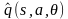 , et au lieu de mettre à jour une case de Q(s, a) à la fois, on met à jour tout le vecteur θ, le but étant de généraliser ce qu’on apprend à plusieurs couples état-action. Tous les composantes du vecteur θ ne sont pas mise à jours de la même façon, mais en fonction de leur contribution à l’erreur l(θ), c’est-à-dire que chaque composante θi est modifiée proportionnellement à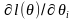 .
Par application du principe de bootstrapping, et suite à l’observation ,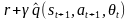 devient notre nouvel estimateur de . On met à jour le vecteur θ comme suit :

On suppose que notre nouvel estimateur est indépendant de θ, et on l’annule par la dérivée partielle pour obtenir :
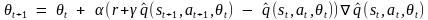
Voici ci-dessous l’algorithme SARSA avec fonction approximée. On note que même si on écrit s, l’algorithme manipule en fait le vecteur des attributs observés X(s) :
But : Trouver une politique quasi-optimale .
.
Initialiser un vecteur θ aléatoirement ;
π ← Une politique qui Choisit pour chaque état s, l’action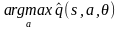 avec probabilité ou bien une action aléatoire avec probabilité ε.
s ← l’état initial ;
a ← une action choisie de s par la politique π ;
Répéter :
Effectuer l’action a et observer le gain r et l’état s’ ;
a’ ← une action choisie de s’ par la politique π ;
Calculer l’erreur entre la valeur prévue et le nouvel estimateur :


Mettre à jour les composantes θi de sorte à réduire l’erreur :

Faire décroitre la valeur de α ;
s ← s’ ; a ← a’ ;
Si la fonction est linéaire, les résultats de convergence (pour le SARSA tabulaire) restent valides.
L’algorithme SARSA (ou SARSA(0)), améliore son
estimation de la valeur d’état-action
 à partir d’une observation Rt+1 et de son estimation du
couple état-action suivant :
à partir d’une observation Rt+1 et de son estimation du
couple état-action suivant :
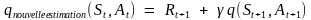
Cette estimation peut être améliorée en voyant quelques étapes de plus vers le futur :

Cette extension de SARSA (qu’on appelle n-step-SARSA) peut être implémentée en stockant à tout instant t, les n derniers couples état-action et les n derniers gains obtenus, et en misant à jour (à l’instant t) l’estimation de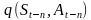 .Cet algorithme génère de meilleures estimations, mais il est moins réactif vu que la valeur du couple état-action n’est mise à jour que n étapes après sa visite.
La technique de la trace d’éligibilité
permet de générer de bonnes estimations comme l’algorithme
n-step-SARSA tout en gardant la réactivité de SARSA. L’idée est
de maintenir un vecteur d’éligibilité e de même taille que θ.
Le vecteur e est une mémoire à cours terme qui représente la
contribution de chaque composante θi
au dernier gain généré et donc à l’erreur entre la nouvelle et
l’ancienne estimation. Le vecteur e est initialisé à 0, et est
mit à jour par la formule
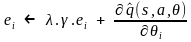
(λ
est un paramètre réel entre 0 et 1). La mise à jour des
composantes θi
de l’algorithme SARSA est remplacée par
 .
On appelle ce nouvel algorithme SARSA(λ). Clairement, si λ = 0, on
obtient l’algorithme SARSA.
.
On appelle ce nouvel algorithme SARSA(λ). Clairement, si λ = 0, on
obtient l’algorithme SARSA.
Le package MDPtoolbox du langage R propose des fonctions liées à la résolution des processus de décision Markoviens (MDP) à temps discrets: horizon fini, itération de la valeur, itération de la politique, algorithmes de programmation linéaire avec quelques variantes et propose également certaines fonctions liées à l'apprentissage par renforcement.
Cependant je n’ai pas trouvé sur Internet des exemples d’apprentissage par renforcement sous R. Pour valider se que j’ai appris, j’ai créé une petite application avec le langage Javascript que je connais mieux que R.
J’ai implémenté une simulation du problème « Mountain–Car Task » comme expliqué dans [1] :
 « Considérez
la tâche de conduire une voiture sur une route de montagne abrupte,
[comme le suggère la figure à droite]. La difficulté est que la
gravité est plus forte que le moteur de la voiture, et même à
pleine accélération, la voiture ne peut pas atteindre le but [qui
est au sommet de la montagne droite]. La seule solution consiste à
s'éloigner du but et à monter la pente opposée à gauche. Ensuite,
en appliquant plein gaz la voiture peut accumuler assez d'inertie
pour atteindre le but. Il s'agit d'un exemple simple d'une tâche où
les choses doivent s'aggraver dans un sens (loin du but) avant
qu'elles ne puissent s'améliorer. »
« Considérez
la tâche de conduire une voiture sur une route de montagne abrupte,
[comme le suggère la figure à droite]. La difficulté est que la
gravité est plus forte que le moteur de la voiture, et même à
pleine accélération, la voiture ne peut pas atteindre le but [qui
est au sommet de la montagne droite]. La seule solution consiste à
s'éloigner du but et à monter la pente opposée à gauche. Ensuite,
en appliquant plein gaz la voiture peut accumuler assez d'inertie
pour atteindre le but. Il s'agit d'un exemple simple d'une tâche où
les choses doivent s'aggraver dans un sens (loin du but) avant
qu'elles ne puissent s'améliorer. »
Note : l’indexation commence de 0. C’est-à-dire que θ0 est la première composante du vecteur θ.
L’agent est la voiture ;
Les actions possibles sont :
Accélérer vers la gauche (A = 0) ;
Accélérer vers la droite (A = 1) et
Ne rien faire (A = 2).
L’environnement :
La voiture est sous l’influence des forces suivantes :
Son accélération ;
La gravité ;
La réaction de la route et
Le frottement.
À l’arrivé au but, la voiture est instantanément téléportée vers sa position initiale avec accélération et vitesse nulles.
Le feature vector :
On suppose que l’agent ne peut sentir que sa vitesse et sa position horizontales. Les valeurs réelles possibles pour la position sont partitionnées en 20 classes. Les valeurs réelles possibles pour la vitesse sont eux-aussi partitionnées en 20 classes.
Tout état S est résumé par un couple (position, vitesse) qui est
transformé à un feature vector X(S) de 400 booléens contenant
des zéros partout et un 1 à la composante .
.
La fonction approximée :
On défini un vecteur θ
de
composantes
et la fonction approximée comme
suit :
comme
suit :

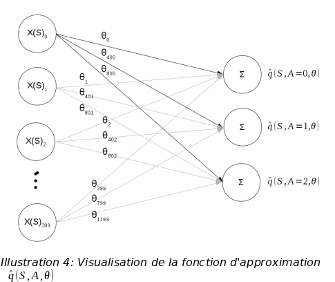
La granularité temporelle :
L’agent choisit une action à chaque changement du feature-vector X(St) ou bien s’il n’y as pas de changement pendant 250ms.
La distribution des gains :
Avant que l’agent exécute sa nouvelle décision, il reçoit un gain = -1 sauf s’il arrive au but au quel cas il obtient un gain = +1.
On remarque qu’avec l’algorithme SARSA(λ) avec comme paramètres (α=0.1, γ=0.9, ε=0.05, λ=0.95) et après plusieurs essais, la voiture trouve une politique lui permettant d’arriver au but dans un temps compétitif à celui d’un joueur humain :
Le fichier jeu.html contient une version de la simulation jouable par l’être humain.
Le fichier selfplay.html contient la simulation avec apprentissage automatique.
Tous les logiciels que j’ai trouvés sont single-purpose et ne sont pas généraux.
L’apprentissage par renforcement est un sous domaine de l’apprentissage machine où un agent interagit avec son environnement et apprend à choisir les actions qui maximisent ses gains.
Quand l’environnement est très complexe, l’apprentissage par renforcement utilise les méthodes d’apprentissage supervisé (en particulier les méthodes de régression) pour estimer la valeur des actions.
Nous avons présenté ici uniquement l’algorithme SARSA(λ) qui est une méthode de différences temporelles de type « on-policy ». Le domaine d’apprentissage par renforcement est bien plus vaste.
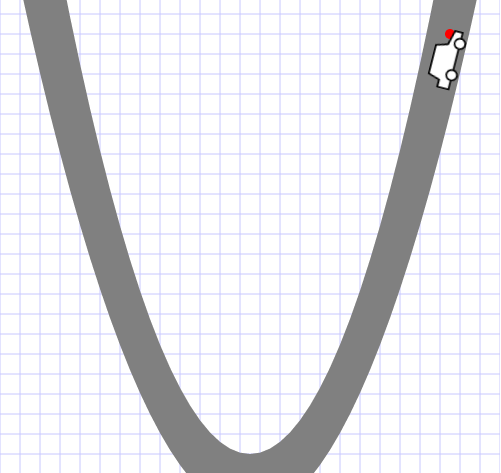
[1] |
Sutton, Richard S., and Andrew G. Barto. Reinforcement learning: An introduction. Vol. 1. No. 1. Cambridge: MIT press, 1998. |
[2] |
SYS, T., and É. ATOIR. "APPRENTISSAGE PAR RENFORCEMENT: UN TUTORIEL." |
[3] |
Sutton, Richard S., Tutorial: Introduction to Reinforcement Learning with Function Approximation, Microsoft research, https://www.youtube.com/watch?v=ggqnxyjaKe4 |
[4] |
David Silver RL Course - Lectures 1 to 10: Introduction to Reinforcement Learning, https://www.youtube.com/watch?v=2pWv7GOvuf0 |